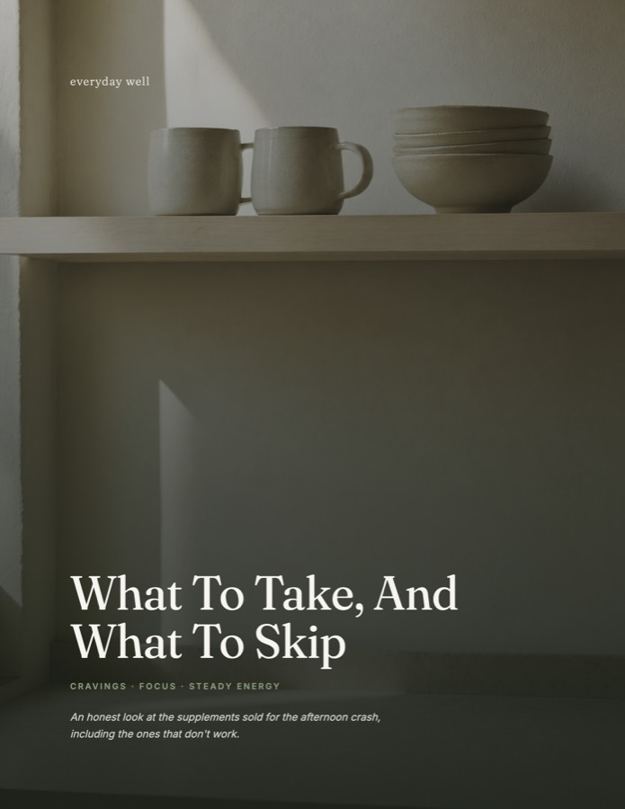

It should land within a minute or two. If it isn't there, look in promotions and spam, because that's usually where it ends up.

The plan covers what to do. This one covers what people take for cravings, focus and steady energy: green tea extract, chromium, berberine, saffron, the apple cider vinegar gummies, caffeine. Sixteen of them, each with a straight verdict, and about half don't survive it.
It isn't a download link. Message whoever sent you this and they'll send it over, and you can ask them whatever you want.
Message me for the supplement guideYou don't have to read the whole thing first. Walk for five to ten minutes after your next meal, ideally lunch. That's day one done, and it's the move that does the most.